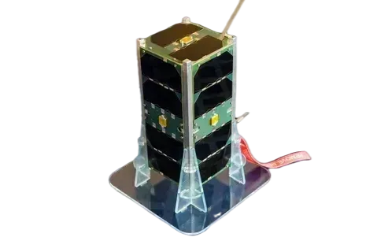
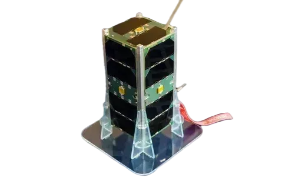
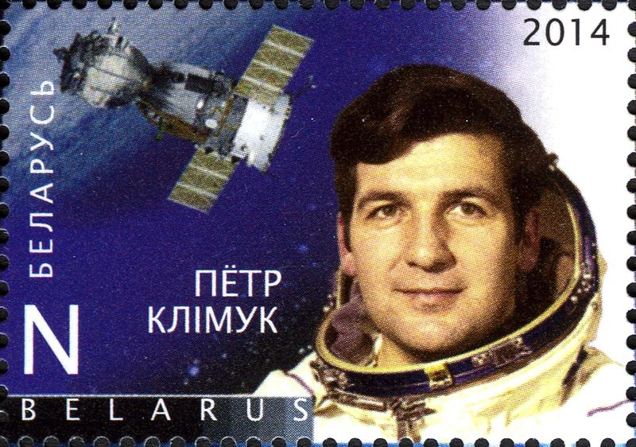
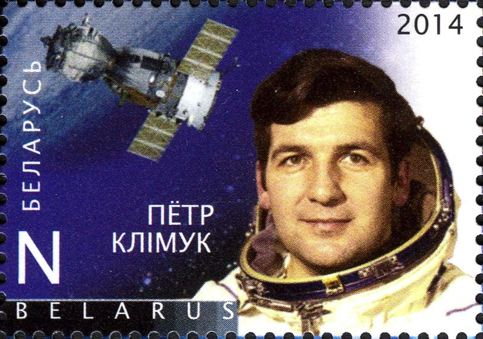

БелКА -2
22 июля 2012 года с космодрома «Байконур» был запущен первый белорусский спутник дистанционного зондирования Земли «БелКА-2».
Он создавался для помощи МЧС и нужд сельского и лесного хозяйства. Первые снимки со спутника стали поступать 29 августа 2012 года.
Спутник «БелКА -2» успешно выведен на орбиту и Республика Беларусь обретает статус космической державы. Официальная аббревиатура — БКА, но в народе его по привычке называют «Белкой».

15 января 2016 года с китайского космодрома «Сичан» отправлен в полет белорусский телекоммуникационный спутник «Белинтерсат-1». Он передает телевизионный и радиосигнал, а также обеспечивает доступ в Интернет.
29 октября 2018 года в 03.43 (по времени Минска) состоялось знаковое событие в истории Белорусского государственного университета. Спутник БГУ стал первым университетским спутником в системе белорусского образования и третьим объектом отечественного происхождения на околоземной орбите.
 

Кто первый космонавт суверенной Республики Беларусь?
 
